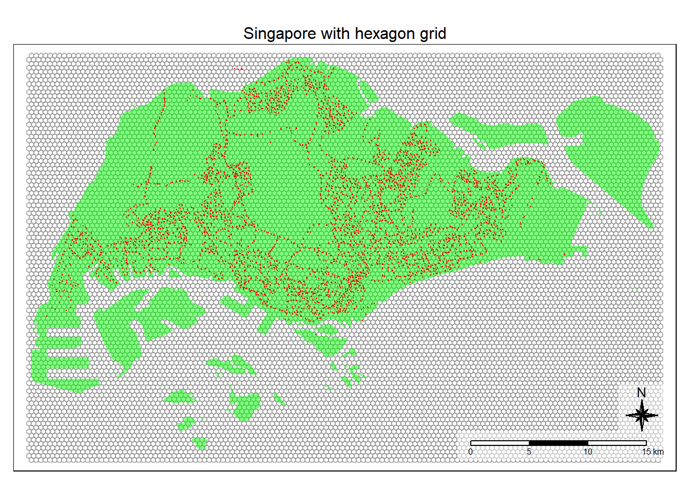
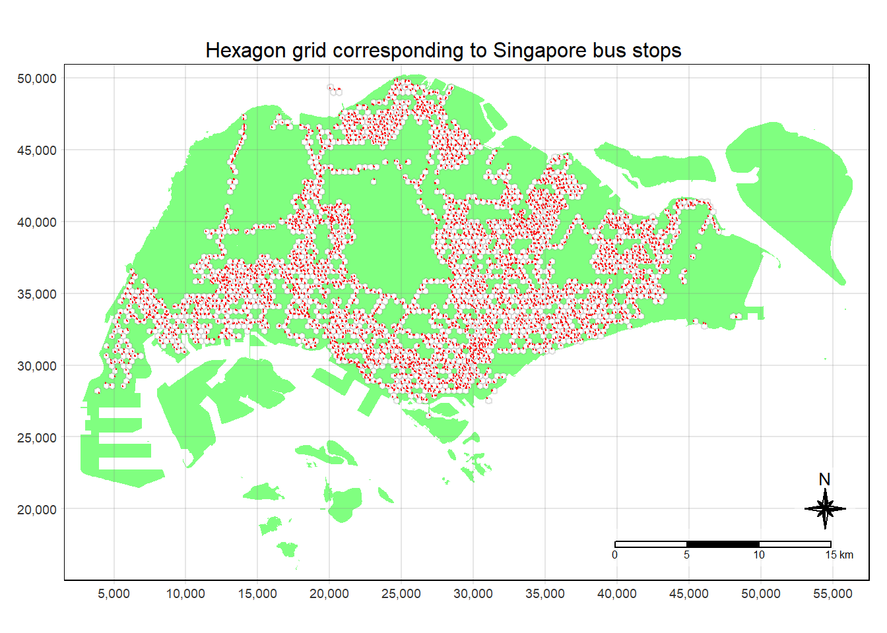
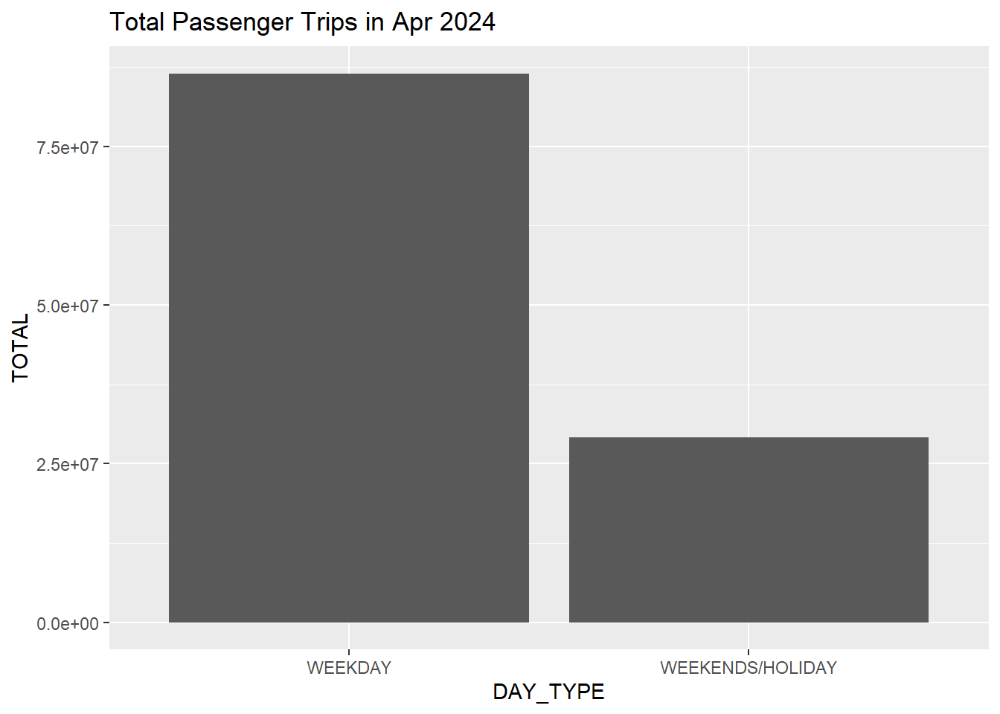
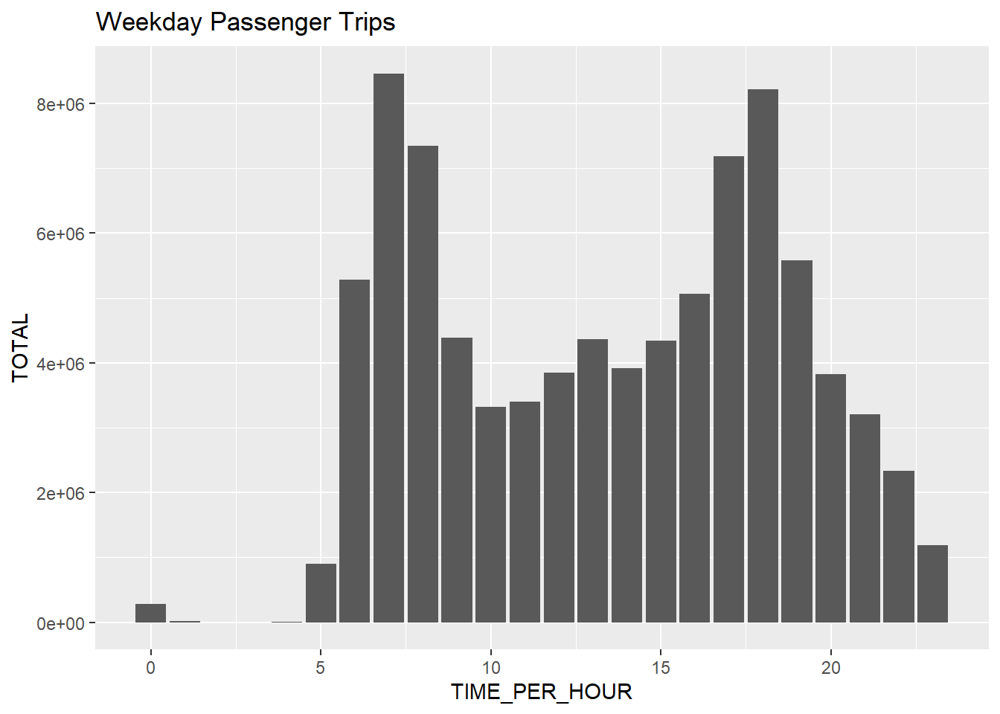
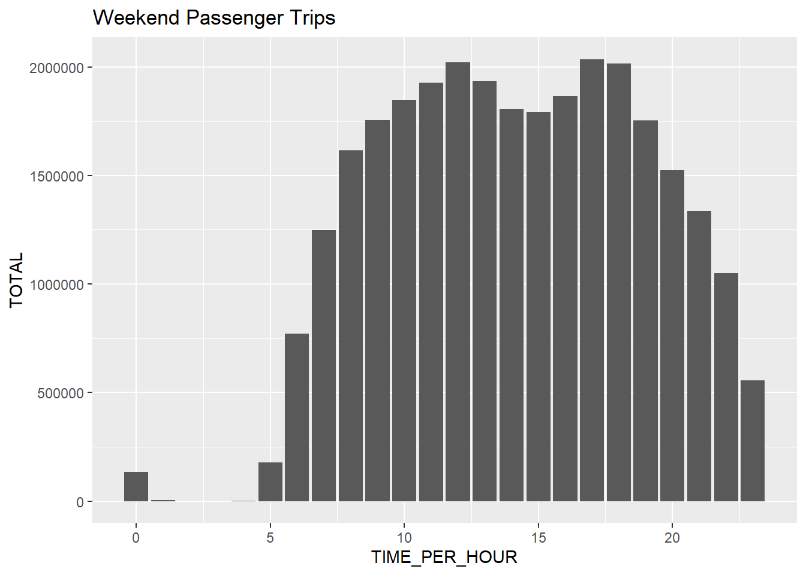

pacman::p_load(sf, spdep, tmap, tidyverse, knitr)ESDA Bus Stops
Intent of this notebook
Apply appropriate spatial statistical methods to - discover if bus stops are even distributed geographically. - find out if there are any sign of spatial clusterings, and if yes, where are these clusters.
Setting up the environment
Packages
Import data
bus stop locations
busstops<- st_read(dsn = "data/spatial",
layer = "BusStop") %>%
st_transform(crs = 3414)Reading layer `BusStop' from data source
`C:\sihuihui\mitbcapstone\notebooks\data\spatial' using driver `ESRI Shapefile'
Simple feature collection with 5166 features and 3 fields
Geometry type: POINT
Dimension: XY
Bounding box: xmin: 3970.122 ymin: 26482.1 xmax: 48285.52 ymax: 52983.82
Projected CRS: SVY21glimpse(busstops)Rows: 5,166
Columns: 4
$ BUS_STOP_N <chr> "65059", "16171", "61101", "01239", "17269", "11291", "1153…
$ BUS_ROOF_N <chr> "B12", "B06", "NIL", "B01", "B01", "B17", "B12", "B05", "B0…
$ LOC_DESC <chr> "ST ANNE'S CH", "YUSOF ISHAK HSE", "BLK 120", "SULTAN PLAZA…
$ geometry <POINT [m]> POINT (35565.66 41659.52), POINT (21439.91 31253.63),…Hexagon layer
mpsz <-st_read(dsn = "data/spatial",
layer = "MPSZ-2019") %>%
st_transform(crs = 3414)Reading layer `MPSZ-2019' from data source
`C:\sihuihui\mitbcapstone\notebooks\data\spatial' using driver `ESRI Shapefile'
Simple feature collection with 332 features and 6 fields
Geometry type: MULTIPOLYGON
Dimension: XY
Bounding box: xmin: 103.6057 ymin: 1.158699 xmax: 104.0885 ymax: 1.470775
Geodetic CRS: WGS 84hexagon grid with 400m from 1 edge to the opposite
hex_layer <-
st_make_grid(mpsz,
cellsize = 400,
what = "polygon",
square = FALSE) %>%
st_sf()tm_shape(hex_layer) +
tm_fill(col = "white", title = "Hexagons") +
tm_borders(alpha = 0.5) +
tm_layout(main.title = "Singapore with hexagon grid",
main.title.position = "center",
main.title.size = 1.0,
legend.height = 0.35,
legend.width = 0.35,
frame = TRUE) +
tm_compass(type="8star", size = 2, bg.color = "white", bg.alpha = 0.5) +
tm_scale_bar(bg.color = "white", bg.alpha = 0.5) +
tm_shape(mpsz) +
tm_fill("green", title = "Singapore Boundary", alpha = 0.5) +
tm_shape(busstops) +
tm_dots(col = "red", size = 0.005, title = "Bus Stops")
hex_layer$n_busstops = lengths(st_intersects(hex_layer, busstops))
hex_layer <- filter(hex_layer, n_busstops > 0)tm_shape(mpsz) +
tm_fill("green", title = "Singapore Boundary", alpha = 0.5) +
tm_shape(hex_layer) +
tm_fill(col = "white", title = "Hexagons", alpha = 1) +
tm_borders(alpha = 0.2) +
tm_layout(main.title = "Hexagon grid corresponding to Singapore bus stops",
main.title.position = "center",
main.title.size = 1.0,
legend.height = 0.35,
legend.width = 0.35,
frame = TRUE) +
tm_compass(type="8star", size = 2, bg.color = "white", bg.alpha = 0.5) +
tm_scale_bar(bg.color = "white", bg.alpha = 0.5) +
tm_shape(busstops) +
tm_dots(col = "red", size = 0.001, title = "Bus Stops") +
tm_grid(alpha = 0.2)
assign ids to hexagon cell
head(hex_layer)Simple feature collection with 6 features and 1 field
Geometry type: POLYGON
Dimension: XY
Bounding box: xmin: 3667.538 ymin: 27988.55 xmax: 5067.538 ymax: 31568.12
Projected CRS: SVY21 / Singapore TM
geometry n_busstops
1 POLYGON ((3867.538 27988.55... 1
2 POLYGON ((4467.538 28334.96... 1
3 POLYGON ((4467.538 30413.42... 1
4 POLYGON ((4467.538 31106.24... 1
5 POLYGON ((4667.538 30067.01... 2
6 POLYGON ((4867.538 28334.96... 1hex_layer$hex_id <- sprintf("H%04d", seq_len(nrow(hex_layer))) %>% as.factor()
head(hex_layer)Simple feature collection with 6 features and 2 fields
Geometry type: POLYGON
Dimension: XY
Bounding box: xmin: 3667.538 ymin: 27988.55 xmax: 5067.538 ymax: 31568.12
Projected CRS: SVY21 / Singapore TM
geometry n_busstops hex_id
1 POLYGON ((3867.538 27988.55... 1 H0001
2 POLYGON ((4467.538 28334.96... 1 H0002
3 POLYGON ((4467.538 30413.42... 1 H0003
4 POLYGON ((4467.538 31106.24... 1 H0004
5 POLYGON ((4667.538 30067.01... 2 H0005
6 POLYGON ((4867.538 28334.96... 1 H0006passenger trips
apr_od<- read_csv("data/aspatial/origin_destination_bus_202404.csv")glimpse(apr_od)Rows: 5,667,461
Columns: 7
$ YEAR_MONTH <chr> "2024-04", "2024-04", "2024-04", "2024-04", "2024-…
$ DAY_TYPE <chr> "WEEKENDS/HOLIDAY", "WEEKDAY", "WEEKENDS/HOLIDAY",…
$ TIME_PER_HOUR <dbl> 16, 16, 14, 14, 17, 17, 17, 17, 7, 17, 14, 10, 20,…
$ PT_TYPE <chr> "BUS", "BUS", "BUS", "BUS", "BUS", "BUS", "BUS", "…
$ ORIGIN_PT_CODE <chr> "04168", "04168", "80119", "80119", "44069", "4406…
$ DESTINATION_PT_CODE <chr> "10051", "10051", "90079", "90079", "17229", "1722…
$ TOTAL_TRIPS <dbl> 2, 9, 6, 8, 1, 2, 17, 2, 6, 2, 5, 3, 7, 1, 5, 2, 1…Data Wrangling of Aspatial Data
Need to process the od trips data
data type
convert from character to factor data type.
apr_od$ORIGIN_PT_CODE <- as.factor(apr_od$ORIGIN_PT_CODE)
apr_od$DESTINATION_PT_CODE <- as.factor(apr_od$DESTINATION_PT_CODE)Check the data again
glimpse(apr_od)Rows: 5,667,461
Columns: 7
$ YEAR_MONTH <chr> "2024-04", "2024-04", "2024-04", "2024-04", "2024-…
$ DAY_TYPE <chr> "WEEKENDS/HOLIDAY", "WEEKDAY", "WEEKENDS/HOLIDAY",…
$ TIME_PER_HOUR <dbl> 16, 16, 14, 14, 17, 17, 17, 17, 7, 17, 14, 10, 20,…
$ PT_TYPE <chr> "BUS", "BUS", "BUS", "BUS", "BUS", "BUS", "BUS", "…
$ ORIGIN_PT_CODE <fct> 04168, 04168, 80119, 80119, 44069, 44069, 20281, 2…
$ DESTINATION_PT_CODE <fct> 10051, 10051, 90079, 90079, 17229, 17229, 20141, 2…
$ TOTAL_TRIPS <dbl> 2, 9, 6, 8, 1, 2, 17, 2, 6, 2, 5, 3, 7, 1, 5, 2, 1…other data checks
unique(apr_od$YEAR_MONTH)[1] "2024-04"unique(apr_od$DAY_TYPE)[1] "WEEKENDS/HOLIDAY" "WEEKDAY" unique(apr_od$TIME_PER_HOUR) [1] 16 14 17 7 10 20 19 5 9 22 11 21 18 6 12 15 8 23 13 0 1 2 3 4length(unique(apr_od$TIME_PER_HOUR))[1] 24unique(apr_od$PT_TYPE)[1] "BUS"length(unique(apr_od$ORIGIN_PT_CODE))[1] 5104length(unique(apr_od$DESTINATION_PT_CODE))[1] 5106check for duplicates
duplicate <- apr_od %>%
group_by_all() %>%
filter(n()>1) %>%
ungroup()
duplicate# A tibble: 0 × 7
# ℹ 7 variables: YEAR_MONTH <chr>, DAY_TYPE <chr>, TIME_PER_HOUR <dbl>,
# PT_TYPE <chr>, ORIGIN_PT_CODE <fct>, DESTINATION_PT_CODE <fct>,
# TOTAL_TRIPS <dbl>check for missing values and 0 values
apr_od %>%
map(is.na) %>%
map(sum)$YEAR_MONTH
[1] 0
$DAY_TYPE
[1] 0
$TIME_PER_HOUR
[1] 0
$PT_TYPE
[1] 0
$ORIGIN_PT_CODE
[1] 0
$DESTINATION_PT_CODE
[1] 0
$TOTAL_TRIPS
[1] 0summary(apr_od$TOTAL_TRIPS) Min. 1st Qu. Median Mean 3rd Qu. Max.
1.00 2.00 4.00 20.41 12.00 30786.00 From the above output, we know that there are no missing values and no observations with 0 trips.
Visualising the data
total_trips <- apr_od %>%
group_by(DAY_TYPE) %>%
summarise(TOTAL = sum(TOTAL_TRIPS))
g_total_trips <- ggplot(total_trips) +
geom_col(aes(x=DAY_TYPE, y=TOTAL)) +
ggtitle('Total Passenger Trips in Apr 2024')
g_total_trips
weekday_trips <- apr_od %>%
filter(DAY_TYPE == "WEEKDAY") %>%
group_by(TIME_PER_HOUR) %>%
summarise(TOTAL = sum(TOTAL_TRIPS))
g_weekday_trips <- ggplot(weekday_trips) +
geom_col(aes(x=TIME_PER_HOUR, y=TOTAL)) +
ggtitle('Weekday Passenger Trips')
weekend_trips <- apr_od %>%
filter(DAY_TYPE == "WEEKENDS/HOLIDAY") %>%
group_by(TIME_PER_HOUR) %>%
summarise(TOTAL = sum(TOTAL_TRIPS))
g_weekend_trips <- ggplot(weekend_trips) +
geom_col(aes(x=TIME_PER_HOUR, y=TOTAL)) +
ggtitle('Weekend Passenger Trips')
g_weekday_trips 
g_weekend_trips
apr_trips <- apr_od %>%
select(c(ORIGIN_PT_CODE, DAY_TYPE, TIME_PER_HOUR, TOTAL_TRIPS)) %>%
rename(BUS_STOP_N = ORIGIN_PT_CODE)
(head(apr_trips))# A tibble: 6 × 4
BUS_STOP_N DAY_TYPE TIME_PER_HOUR TOTAL_TRIPS
<fct> <chr> <dbl> <dbl>
1 04168 WEEKENDS/HOLIDAY 16 2
2 04168 WEEKDAY 16 9
3 80119 WEEKENDS/HOLIDAY 14 6
4 80119 WEEKDAY 14 8
5 44069 WEEKDAY 17 1
6 44069 WEEKENDS/HOLIDAY 17 2Mapping bus stops to hexagon layer
hex layer only tell us the number of bus stops in each cell need to associate the bus stop codes with bus stop locations.
bs_hex <- st_intersection(busstops, hex_layer) %>%
st_drop_geometry() %>%
select(c(BUS_STOP_N, hex_id))
head(bs_hex) BUS_STOP_N hex_id
3199 25059 H0001
2527 25751 H0002
247 26379 H0003
2340 26369 H0004
2743 25719 H0005
3547 26389 H0005bs_hex$BUS_STOP_N <- as.factor(bs_hex$BUS_STOP_N )Number of trips per hexagon cell
trips <- inner_join(apr_trips, bs_hex)
head(trips)# A tibble: 6 × 5
BUS_STOP_N DAY_TYPE TIME_PER_HOUR TOTAL_TRIPS hex_id
<fct> <chr> <dbl> <dbl> <fct>
1 04168 WEEKENDS/HOLIDAY 16 2 H1257
2 04168 WEEKDAY 16 9 H1257
3 80119 WEEKENDS/HOLIDAY 14 6 H1447
4 80119 WEEKDAY 14 8 H1447
5 44069 WEEKDAY 17 1 H0522
6 44069 WEEKENDS/HOLIDAY 17 2 H0522 trips <- trips %>%
group_by(
hex_id,
DAY_TYPE,
TIME_PER_HOUR) %>%
summarise(TOTAL_TRIPS = sum(TOTAL_TRIPS))
head(trips)# A tibble: 6 × 4
# Groups: hex_id, DAY_TYPE [1]
hex_id DAY_TYPE TIME_PER_HOUR TOTAL_TRIPS
<fct> <chr> <dbl> <dbl>
1 H0001 WEEKDAY 6 15
2 H0001 WEEKDAY 7 45
3 H0001 WEEKDAY 8 14
4 H0001 WEEKDAY 9 14
5 H0001 WEEKDAY 10 6
6 H0001 WEEKDAY 11 10GeoVisualisation and Analysis
Number of trips by Peak Hour
Peak Hour Periods:
Weekday Morning Peak - 9am to 9am
Weekday Afternoon Peak - 5pm to 8pm
Weekend/holiday Morning Peak - 11am to 2pm
Weekend/holiday Evening Peak - 4pm to 7pm